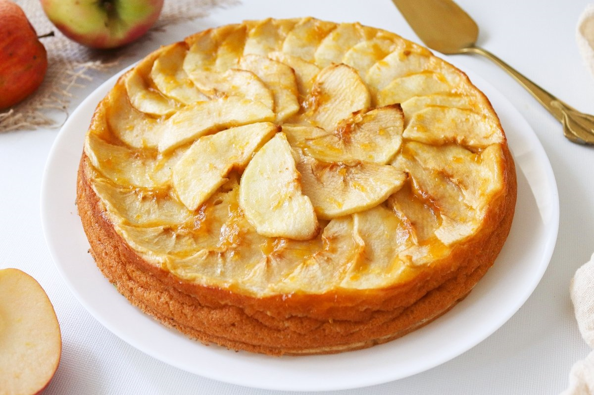
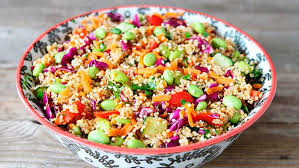

Recetas para Celíacos

Pastel de Pollo sin Gluten
Ingredientes:
- 180 gramos de Maizena
- 2 cucharadas de mix de semillas sin gluten
- 110 gramos de leche en polvo descremada sin gluten
- 1 huevo
- 3 cucharadas de aceite
- agua cantidad necesaria
Relleno:
- 1 cebolla cortada en cubos
- 1 zanahoria cortada en rueditas
- 110 gramos de leche en polvo descremada sin gluten
- 1/4 de morrón rojo cortado en cubitos
- 2 cucharadas de aceite
- 2 cucharadas de aceite
- Masa: En un bol dispone la Maizena junto a la leche en polvo, las semillitas y mezcla bien.
- Ahora agregá el huevo, el aceite y un chorrito de agua fría.
- Con la ayuda de una cuchara o las manos integrá todos los ingredientes hasta lograr una masa suave.
- Si fuera necesario agregá más agua o Maizena para darle el punto justo. Esta masa no necesita amasados.
- Cubrí el bollo de masa con papel film y dejá descansar en la heladera por 15 minutos.
- Estirá la masa con un palote de cocina y más Maizena. Cubrí un molde para tarta (22 a 24 cm) y reservá en heladera.
- Relleno: En una sartén a fuego medio salteá la cebolla, la zanahoria y el morrón hasta que resulten bien cocidos junto a un chorrito de aceite.
- Mezclá con el pollo cocido, condimentá a gusto y reservá.
- Ligue: En un bol mezclá la leche, con el huevo y la Maizena con la ayuda de un batidor.
- Condimenáa a gusto y reservá.
- Armado de la tarta y cocción: Pre-calentá el horno de casa.
- Sobre la masa ya estirada en el molde agregá el relleno de verdura y pollo
- Distribuí de manera uniforme. Ahora agregamos el ligue hasta cubrir todo.
- Tené cuidado que el ligue no rebalse la altura del borde de la masa y cociná en horno medio por 30-40´aproximadamente.
- Una vez bien cocida la tarta dejala entibiar y servila con una rica ensalada.
Preparación:
Pastas de Arroz con Verduras
Ingredientes:
- 1 berenjena
- 1 zanahoria
- 1/2 zapallo anco mediano
- 2 dientes ajo
- 1 cebolla mediana
- 1/2 morron
Preparación:
- Lavar pelar y cortar los vegetales, acomodarlos en una asadera, rociarlos con aceite de oliva o el que prefieran, sal y una cdita de caldo deshidratado (opcional).
- Remover cada tanto los vegetales para que no se quemen, si hiciera falta agregar algo de agua.
- Cuando estén cocidos servir en el plato con los fideos de arroz cocidos/hidratados (según los que usen), y rociar con aceite de oliva, rectificar sal de ser necesario y agregar pimienta si les gusta. Es riquísimo, rápido y mega fácil!

Tarta de Manzana sin Gluten
Ingredientes:
- 2 huevos
- 200 gramos de Maizena
- 1 Pizca de azúcar
- 1 manzana verde
- manteca (cantidad necesaria)
Preparación:
- En una licuadora volcar los huevos, la Maizena, la leche y el azúcar
- Licuar todo junto y reservar en la heladera por 30 minutos
- Mientras tanto cortar la manzana en rodajas muy finas y rociar con un poco de jugo de limón para evitar que se oxiden.
- Pasados los 10 minutos, enmantecar una sartén y llevarla a fuego fuerte.
- Una vez bien caliente volcar la mitad de la preparación, apenas comienza a cocinarse apoyar con cuidado y de manera pareja (sin encimar la una con la otra) las rodajas de manzana.
- Bajar el fuego y volcar el resto de la preparación por encima de las manzanas.
- Una vez que se coagule la pasta dar vuelta el panqueque para que se termine de cocinar del otro lado.
- Mientras tanto espolvorear azúcar en otra sartén para hacer un caramelo, una vez que esté a punto deslizar el panqueque dentro de esta nueva sartén y dejarlo aproximadamente 30 segundos de un lado y del otro para que se impregne bien el caramelo.
- Servir sólo o acompañado de una bocha de helado o de crema batida.

Ensalada de Quinoa y Verduras
Ingredientes:
- 120 gramos quinoa (una mezcla de quinoa de diferentes colores blanco, rojo y negro)
- 1 pimiento amarillo
- 1 calabacín
- 1 zanahoria
- 2 cucharadas de aceite de oliva
- Sal y pimienta para sazonar
- Un poco de perejil, perifollo o albahaca
Preparación:
- Lavar la quinoa a fondo con agua tibia para eliminar las sustancias amargas de las capas exteriores..
- Cocer la quinoa en 2,5 veces de agua correspondiente a su peso durante 15 minutos y dejar que se hinche otros 5 minutos más.
- Cortar la zanahoria, el pimiento y el calabacín en dados y freír las verduras por este mismo orden en aceite de oliva hasta que las verduras estén ligeramente doradas, pero todavía crujientes y frescas.
- Mezclar la quinoa con las verduras y añadir la sal, la pimienta y las hierbas frescas como el perejil o la albahaca.
Pizza de Verduras sin Gluten
Ingredientes:
- Base de pizza sin gluten
- Salsa de tomate para la base
- Queso rallado sin gluten
- 1 berenjena
- Sal y pimienta
- Topping napolitana
- 1 tomate
- Hojas albahaca fresca
- Sal
Preparación:
- En un bowl ponemos la premezcla y la leche en polvo. Cuando la levadura haya crecido y haga como una espuma, hacemos un huequito en la premezcla y ponemos la levadura. Agregamos el huevo y el aceite. Formamos un bollo con las manos. Si está muy seco pueden agregar leche. Amasamos un poco y acomodarnos la masa en una pizzera engrasada (yo usé spray vegetal). Cubrimos la masa y la dejamos levar por 30 minutos.
- Esparcir el queso rallado...
- En esos 30 minutos vamos a preparar los toppings. Cortamos la berenjena en rodajas finas. Ponemos en una placa previamente rociada con aceite. Condimentamos con sal, aceite y pimentón y llevamos a horno fuerte por 10 minutos. Retiramos y reservamos.
- Para la pizza napolitana cortamos el tomate en rodajas finas, condimentamos con sal y reservamos. Lavamos la hojas de albahaca y reservamos.
- Luego de los 30 minutos cocinamos la pizza en horno fuerte por 10 minutos aproximadamente. Retiramos, ponemos la salsa y el queso repartido en cubos por toda la masa. En una mitad ponemos las berenjenas y en la otra el tomate. Si quieren puede poner un hilo finito de aceite de oliva por encima, un toquecito de queso rallado y una pizca de ajo deshidratado en polvo. Llevamos al horno fuerte hasta que de derrita el queso y se caliente el tomate.
- Retiramos la pizza del horno y solo queda ponerle la albahaca. No se la pongan antes porque la albahaca no resiste el calor. Espero que les guste y prueben hacerla en casa